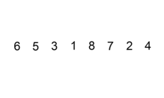

Сортування бульбашкою - для кожної пари індексів проводиться обмін, якщо елементи розташовані не по порядку.
Приклад сортування бульбашкою.
Сортування вибором - пошук найменшого або найбільшого елемента і приміщення його в початок або кінець впорядкованого списку.
Приклад сортування вибором.
Сортування включенням - Визначаємо місце де поточний елемент повинен знаходитися в упорядкованому списку, і вставляємо його туди.

Приклад сортування включенням.
O(nlog n):
Швидке сортування - Ідея алгоритму полягає в переставлянні елементів масиву таким чином, щоб його можна було розділити на дві частини і кожний елемент з першої частини був не більший за будь-який елемент з другої. Впорядкування кожної з частин відбувається рекурсивно.
Приклад швидкого сортування.
Сортування злиттям - алгоритм сортування, в основі якого лежить принцип «Розділяй та володарюй».
Приклад сортування злиттям.